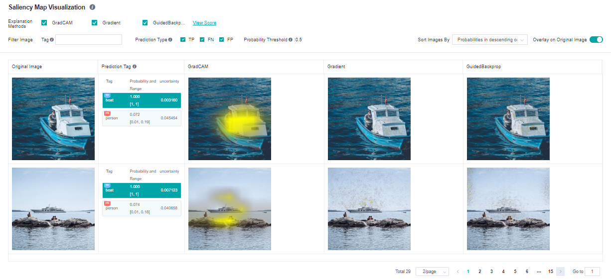
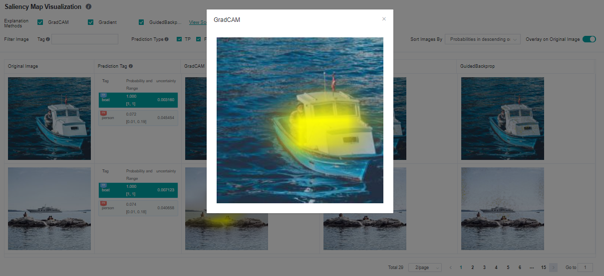
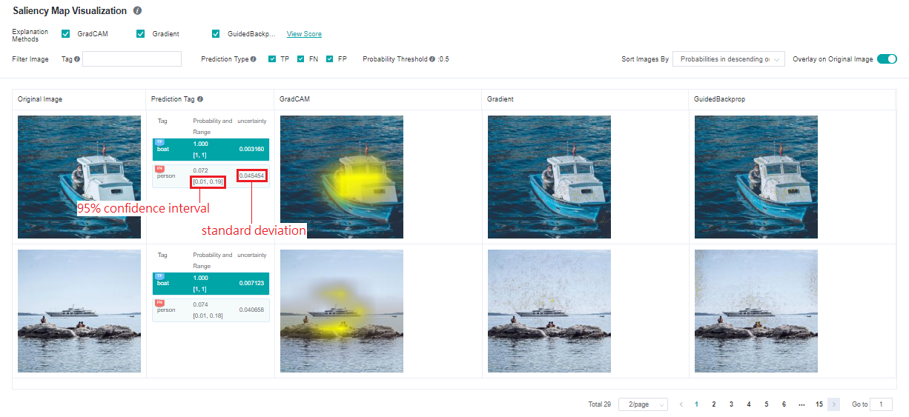
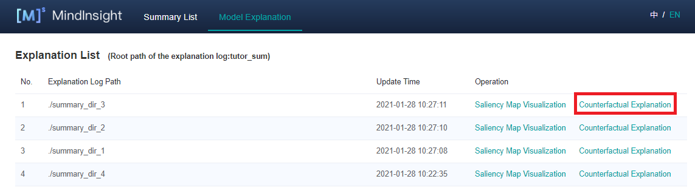
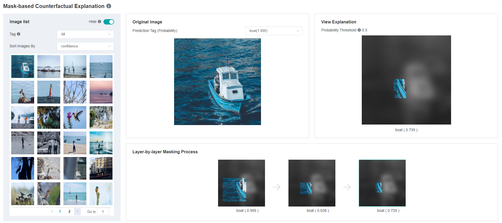

Using MindInsight Visualization

Operation Process
Downloading Data Package
Please follow the Downloading Data Package instructions to download the necessary files for the tutorial.
Preparing the Script
The tutorial below is referencing using_mindinsight.py.
Currently, MindSpore XAI provides the explanation methods and explanation evaluation Python API. You can use the provided explanation methods by mindspore_xai.explanation and the provided explanation evaluation by mindspore_xai.benchmark. You need to prepare the black-box model and data to be explained, instantiate explanation methods or explanation evaluation according to your need and call the explanation API in your script to collect the explanation result and explanation evaluation result.
MindSpore XAI also provides mindspore_xai.runner.ImageClassificationRunner to run all explanation methods and explanation evaluation methods automatically. You just need to register the instantiated object and then all explanation methods and explanation evaluation methods will be executed. Explanation logs containing explanation results and explanation evaluation results will be automatically generated and stored.
The following uses ResNet-50 and multi-label dataset with 20 classes as an example. Initializing the explanation methods in explanation and the evaluation methods in benchmark, the users can then use ImageClassificationRunner to execute and explanation and evaluation for the black-box model. The sample code is as follows:
# have to change the current directory to xai/examples/ first
import mindspore.nn as nn
from mindspore import context
from mindspore import load_checkpoint, load_param_into_net
from mindspore_xai.explanation import GradCAM, GuidedBackprop
from mindspore_xai.benchmark import Faithfulness
from mindspore_xai.runner import ImageClassificationRunner
from common.resnet import resnet50
from common.dataset import classes, load_dataset
context.set_context(mode=context.PYNATIVE_MODE)
num_classes = 20
net = resnet50(num_classes)
param_dict = load_checkpoint("xai_examples_data/ckpt/resnet50.ckpt")
load_param_into_net(net, param_dict)
# initialize explainers with the loaded black-box model
gradcam = GradCAM(net, layer='layer4')
guidedbackprop = GuidedBackprop(net)
# initialize benchmarkers to evaluate the chosen explainers
# for Faithfulness, the initialization needs an activation function that transforms the output of the network to a probability is also needed
activation_fn = nn.Sigmoid() # for multi-label classification
faithfulness = Faithfulness(num_labels=num_classes, metric='InsertionAUC', activation_fn=activation_fn)
# returns the dataset to be explained, when localization is chosen, the dataset is required to provide bounding box
# the columns of the dataset should be in [image], [image, labels], or [image, labels, bbox] (order matters)
# You may refer to 'mindspore.dataset.project' for columns managements
dataset = load_dataset('xai_examples_data/test')
data = (dataset, classes)
explainers = [gradcam, guidedbackprop]
benchmarkers = [faithfulness]
# initialize runner with specified summary_dir
runner = ImageClassificationRunner(summary_dir='./summary_dir', network=net, activation_fn=activation_fn, data=data)
runner.register_saliency(explainers, benchmarkers)
# execute runner.run to generate explanation and evaluation results to save it to summary_dir
runner.run()
Restrictions
Only support image classification models, such as Lenet, Resnet, Alexnet.
Input images must be in 1, 3, or 4 channels format.
Only support GPU and Ascend devices with PyNative mode.
All instances of explanation and evaluation methods cannot be reused across runners. Explanation and evaluation methods have to be instantiated exclusively for each runner. Otherwise, errors may occur. A correct example is shown below.
gradcam = GradCAM(net, layer='layer4')
guidedbackprop = GuidedBackprop(net)
runner = ImageClassificationRunner(summary_dir='./summary_dir_1', network=net, activation_fn=activation_fn, data=data)
runner.register_saliency(explainers=[gradcam, guidedbackprop])
runner.run()
# generate another summary with GradCAM only
runner2 = ImageClassificationRunner(summary_dir='./summary_dir_2', network=net, activation_fn=activation_fn, data=data)
# reusing explainer instance in other runner, errors may occur
# runner2.register_saliency(explainers=[gradcam])
# instantiating a new GradCAM is the correct way
gradcam2 = GradCAM(net, layer='layer4')
runner2.register_saliency(explainers=[gradcam2])
runner2.run()
Enabling MindInsight
Enable MindInsight and click Model Explanation on the top of the page. All explanation log paths are displayed. When a log path meets the conditions, the Saliency Map Visualization buttons are displayed in the Operation column.
Pages and Functions
Saliency Map Visualization
Saliency map visualization is used to display the image area that has the most significant impact on the model decision-making result. Generally, the highlighted regions can be considered as key features of the objective classification.

The following information is displayed on the Saliency Map Visualization page:
Objective dataset set by a user through the Python API of the dataset.
Ground truth tags, prediction tags, and the prediction probabilities of the model for the corresponding tags. The system adds the TP, FN, and FP flags(meanings are provided in the page’s information) in the upper left corner of the corresponding tag based on the actual requirements.
A saliency map given by the selected explanation method.
Operations:
Select the required explanation methods. Currently, we support four explanation methods. More explanation methods will be provided in the future.
Click Overlay on Original Image in the upper right corner of the page to overlay the saliency map on the original image.
Click different tags to display the saliency map analysis results of the model for different tags. For different classification results, the focus of the model is usually different.
Check prediction type checkboxes to display images with the checked tag types: TP - true positive, FN - false negative, FP - false positive.
Use the tag filtering function on the upper part of the page to filter out images with specified tags.
Select an image display sequence from Sort Images By in the upper right corner of the page, options: “Probabilities in descending order” and “Uncertainties in descending order”.
Click View Score on the right of an explanation method. The page for assessing all explanation methods is displayed.
Click image you will see the higher resolution image.

Explanation Method Assessment
Comprehensive Assessment
The provided explanation methods are scored from different dimensions. We provide various dimensions scores to help users compare the performance and select the most suitable one. You can configure weights for metrics in a specific scenario to obtain the comprehensive score.
Classification Assessment
The classification assessment page provides two types of comparison. One is to compare scores of different evaluation dimensions of the same explanation method in each tag. The other is to compare scores of different explanation methods of the same evaluation dimension in each tag.
Uncertainty
The model predictions come with uncertainty, which is called Epistemic Uncertainty. It inserts a dropout layer to the network and inferences multiple times. The results are standard deviation and 95% confidence interval of the model output predictions:

The restrictions, preparation of network and data is the same as the saliency explanation methods, users enable uncertainty calculations by invoking register_uncertainty() of ImageClassificiationRunner. The sample code is shown below.
runner = ImageClassificationRunner(summary_dir='./summary_dir_1', network=net, activation_fn=activation_fn, data=data)
runner.register_saliency(explainers=[gradcam, guidedbackprop])
runner.register_uncertainty()
runner.run()
Please note that register_uncertainty() must be used together with register_saliency(), their calling order doesn’t matter.
Counterfactual
Counterfactual is a relatively new way of explaining a model’s decision, which inverts the decision by modifying the traits of the sample. For example, there is an animal image that is classified as a cat by the model. How can we edit that image in order to make the classification not happening? By answering that question, we can explain the model decision of classifying to “cat”. Counterfactuals come in various forms, currently, ImageClassificationRunner provides an easy-to-use method called Hierarchical Occlusion Counterfactual (HOC), more counterfactual methods will be provided in the future.
Hierarchical Occlusion Counterfactual (HOC)
HOC is an occlusion-based method, it searches for the smallest possible display region that is subjected to the constraint of the target label’s prediction confidence greater than a threshold (currently fixed at 0.5). The search process is conducted in a hierarchical manner, at the beginning, the original image was covered by its blurred version, then HOC searches large occlusion areas and recursively deeps down into smaller areas for achieving a more accurate result. It ends up with an area tree, each node represents a square display area and the smaller child areas are fall inside the parent. The root node represents the entire area of the original image, its immediate children are the first layer display areas.
At the moment, ImageClassificationRunner automatically generates the number of layers (1 to 3), the sizes of occluded areas, the strides, and the blur mask base on the image dimensions. The side length of the first layer occlusion square is defined as the round down of half of the short side of the image, we cut the side length in half in every next layer. Meanwhile, the side length has to be equals to or greater than 28, otherwise, stop adding layers. The stride is the round down of 1/5 of the occluded area’s side length.
The preparation of network and data is the same as the saliency explanation methods, users can employ HOC by invoking register_hierarchical_occlusion() of ImageClassificiationRunner. The sample code is shown below.
runner = ImageClassificationRunner(summary_dir='./summary_dir_1', network=net, activation_fn=activation_fn, data=data)
runner.register_hierarchical_occlusion()
runner.run()
Users may combine the use of register_saliency() with the same runner.
HOC Restrictions
Apart from all the restrictions from saliency explanation methods, models must take 3 channels input images.
Input images must be in RGB 3 channels format and the length of the short side must be equals to or greater than 56.
If
register_hierarchical_occlusion()is called butregister_saliency()is not called, then both PyNative and Graph mode are supported.
HOC Pages and Functions
You can see that the ‘Counterfactual Explanation’ operations are enabled for those explanation jobs employed HOC. Clicking it will lead you to the HOC explanation page.

The HOC explanation page displays all HOC results, includes:
Samples with prediction confidence of any tag that greater than 0.5 and their original images.
Prediction confidence of the target tags.
The outcome images and their prediction confidences of each layer.

Operations:
In the upper right corner of “Picture list” panel, there is a “Hide” switch. When the switch is turned on, the samples without HOC explanation result will not be displayed. By default, the switch is on and the users can turn it off to display all samples.
Change the tag filter and sampler sorting on the left “Picture list” panel. Samples can be sorted by prediction confidence.
Browse samples or switch to the next page in the sample list inside the left “Picture list” panel. Select a sample then its HOC results will be shown on the other panels.
Change the tag of HOC result showing on the center “Original Image” panel. Only tags with prediction confidence greater than 0.5 have HOC results.
Inspect the HOC search process on the bottom “Layer-by-layer Masking Process” panel, select a step image then it will be enlarged and shown on the right “View Explanation” panel. (Notes: The occluded regions were darkened and converted to greyscale for display, but it is not the case in the actual HOC search process, only Gaussian blur is employed while brightness and saturation are not altered.)